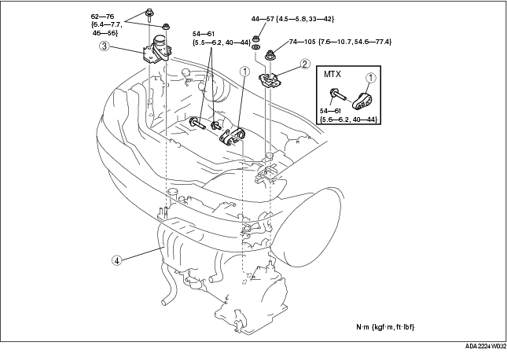

1. Remove the battery and the battery bracket. (See BATTERY REMOVAL/INSTALLATION [ZY].)
2. Drain the engine coolant. (See ENGINE COOLANT REPLACEMENT [ZY].)
3. Disconnect the radiator hose.
4. Remove the air cleaner, intake-air duct, and vacuum hose. (See INTAKE-AIR SYSTEM REMOVAL/INSTALLATION [ZY].)
5. Remove the ATF hose, selector cable, and wiring harness. (ATX) (See AUTOMATIC TRANSAXLE REMOVAL/INSTALLATION [FN4A-EL].)
6. Remove the shift cable. (MTX) (See MANUAL TRANSAXLE REMOVAL/INSTALLATION [F35M-R].)
7. Remove the clutch release cylinder with the pipe still connected. (MTX) (See CLUTCH RELEASE CYLINDER REMOVAL/INSTALLATION.)
8. Remove the drive belt. (See DRIVE BELT REPLACEMENT [ZY].)
9. Remove the A/C compressor with the pipes still connected.
10. Drain the transaxle oil.
11. Remove the joint shaft. (See JOINT SHAFT REMOVAL/INSTALLATION.)
12. Disconnect the front drive shaft (LH) from the transaxle side. (See DRIVE SHAFT REMOVAL/INSTALLATION.)
13. Disconnect the vacuum hose and the heater hose.
14. Disconnect the fuel hose. (See BEFORE SERVICE PRECAUTION [ZY].) (See QUICK RELEASE CONNECTOR REMOVAL/INSTALLATION [ZY].)
15. Disconnect the wiring harness from the engine side.
16. Remove the front pipe. (See EXHAUST SYSTEM REMOVAL/INSTALLATION [ZY].)
17. Remove the front cross member component. (See FRONT CROSSMEMBER REMOVAL/INSTALLATION.)
18. Remove in the order indicated in the table.
19. Install in the reverse order of removal.
20. Start the engine. and inspect and adjust the following.
21. Inspect the following and adjust them if necessary.
22. Perform a road test and verify that there is no abnormal vibration or noise.

1. Secure the engine and the transaxle using an engine jack and attachment.
1. Secure the engine and the transaxle using an engine jack and attachment.
2. Install the No.3 engine mount, and then temporarily tighten the installation bolts and nuts.
3. Tighten the installation bolts in the order shown in the figure.
Tightening torque
4. Align the No.4 engine mount rubber in the direction shown in the figure, and then temporarily tighten the installation bolts and nuts.
5. Tighten the No.4 Engine mount rubber installation bolts and nuts in the order shown in the figure.
|
Bolt, nut number
|
Tightening torque
(N·m {kgf·m, ft·lbf})
|
|---|---|
|
1
|
74-105 {7.6-10.7, 54.6-77.4}
|
|
2, 3
|
44-57 {4.5-5.8, 33-42}
|
6. Remove the engine jack and attachment.